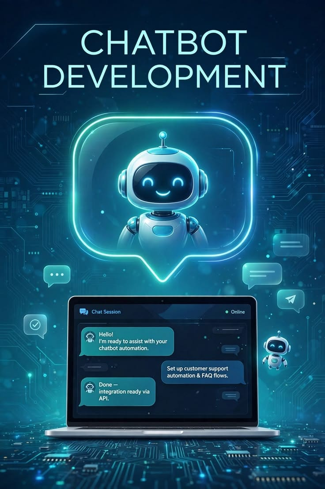

إعداد الطالبة: . رنا عماد محمد حسن | الرقم الجامعي: 2502092 | التاريخ: أكتوبر 2026
شهد العالم في السنوات الأخيرة تطورات كبيرة في مجال الذكاء الاصطناعي، وأصبحت المواقع الإلكترونية تعتمد على تقنياته الحديثة لتقديم خدمات أسرع وأكثر كفاءة للمستخدمين. ومن أبرز هذه التقنيات: روبوتات الدردشة (Chatbots)، التي تستخدم للتواصل مع زوار المواقع والرد على استفساراتهم بشكل فوري، مما يساعد على تحسين تجربة المستخدم وتطوير خدمات الدعم الفني.
روبوتات الدردشة هي برامج حاسوبية مصممة لمحاكاة المحادثات البشرية مع المستخدمين من خلال النصوص أو الصوت. تتيح هذه البرامج للزوار طرح الأسئلة والحصول على إجابات أو إرشادات دون الحاجة إلى التواصل المباشر مع موظف خدمة العملاء في كل وقت. وتوجد روبوتات دردشة بسيطة تعتمد على مجموعة محددة مسبقاً من الأسئلة والأجوبة، كما توجد روبوتات متطورة تستخدم تقنيات الذكاء الاصطناعي ومعالجة اللغة الطبيعية (NLP) لفهم أسئلة المستخدمين وتقديم إجابات مناسبة لها.
تعتمد روبوتات الدردشة الحديثة على مجموعة من التقنيات التي تساعد على فهم استفسارات المستخدمين والتفاعل معهم، وأهمها:
تتنوع استخدامات روبوتات الدردشة حسب طبيعة الموقع والخدمات التي يقدمها، وأبرزها:

| مجال الاستخدام | وظيفة روبوت الدردشة | مثال على الخدمة المقدمة |
|---|---|---|
| المتاجر الإلكترونية | المساعدة في اختيار المنتجات والإجابة عن الاستفسارات | معرفة تكاليف الشحن وطرق الدفع المتاحة |
| المواقع التعليمية | توفير معلومات عن المقررات والتسجيل الأكاديمي | مواعيد الامتحانات وشروط تسجيل المواد |
| البنوك والخدمات المالية | الرد على الاستفسارات العامة بأمان وسرعة | مواعيد العمل وأنواع الحسابات البنكية |
| شركات الاتصالات | حل المشكلات الشائعة وتوجيه العملاء للجهة المختصة | تفاصيل الباقات وتجديد الاشتراكات |
تقدم روبوتات الدردشة العديد من الفوائد مثل: سرعة الاستجابة، وخفض التكاليف التشغيلية، وإمكانية خدمة عدد كبير من المستخدمين في نفس الوقت، بالإضافة إلى تحسين رضا العملاء وتوحيد المعلومات.
ومع ذلك، تواجه هذه الروبوتات بعض التحديات مثل: صعوبة فهم بعض الأسئلة غير الواضحة، أو تقديم معلومات غير دقيقة عند نقص البيانات، وضعف التواصل الإنساني، ومخاوف حماية البيانات والخصوصية، بالإضافة إلى تكلفة التطوير والصيانة.
وللتغلب على هذه التحديات، ينبغي اختبار النظام بشكل منتظم، وتحديث قاعدة معرفته، وتوفير خيار واضح للتواصل مع موظف بشري عند الحاجة.